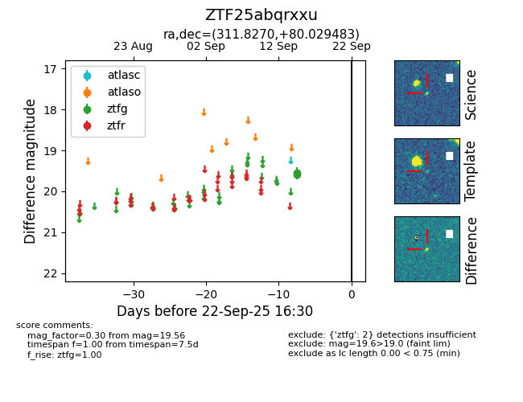

FINK: ZTF25abqrxxu
Lasair: ZTF25abqrxxu
ALeRCE: ZTF25abqrxxu
ZTF25abqrxxu (ztf,fink)
equatorial (ra, dec) = (311.8270,+80.02948)
galactic (l, b) = (113.5295,+21.99140)

last ztfg=19.56
2 ztfg detections